作成手順
Photoshopでの作業
- サンプルバナーをコピー
- Photoshopで「クリップボーサイズ」で新規作成
- ペースト
- 「レイヤー１」に、「新規調整レイヤー：レベル補正」でコントラストを強めにします
- 複製したレイヤーを「切り抜き」ます
- 保存した「選択範囲」は、「アルファチャンネル」に保存（記録）されます
- 「アルファチャンネル」の「サムネイル」をすべて選択して「レイヤーマスクを追加」
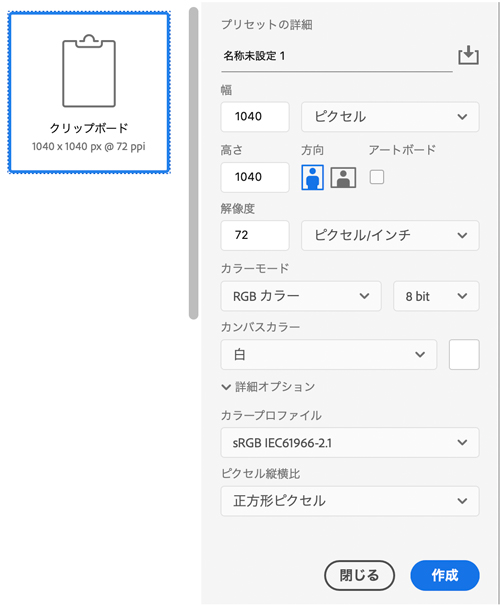
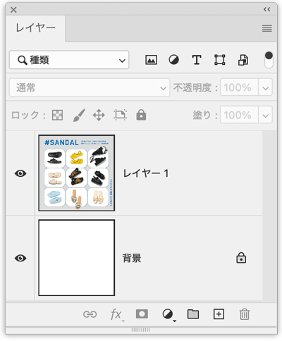
「レベル補正」でコントラストを強調
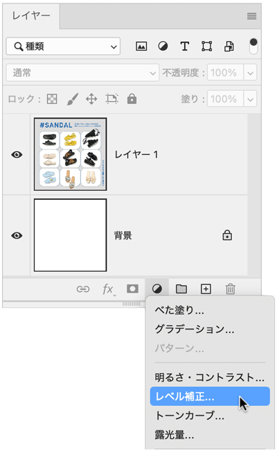
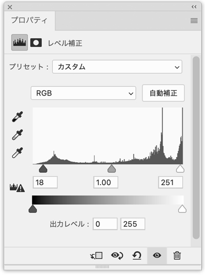
「レイヤー１」と「新規調整レイヤー：レベル補正」を結合
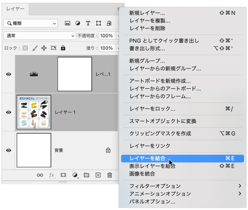
レイヤーを複製
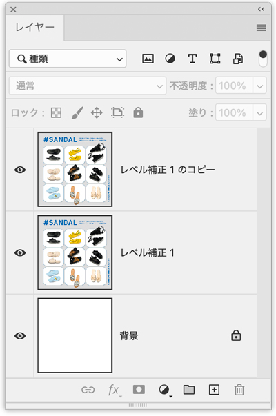
切り抜き（選択範囲）を保存
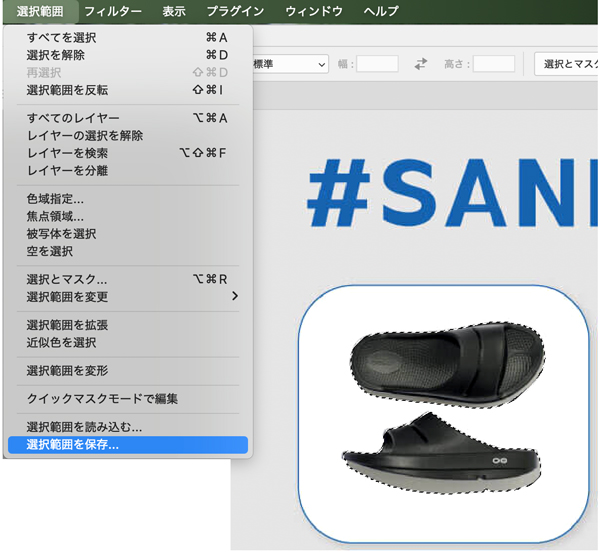
すべての選択範囲を選択してレイヤーマスクで切り抜く
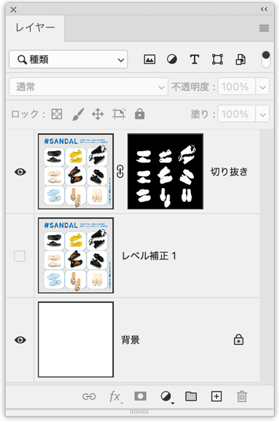
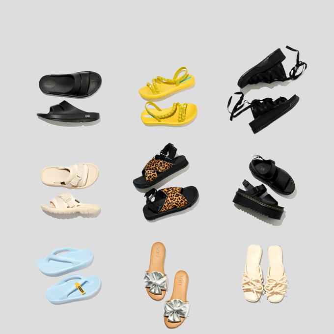
IllustratorからPhotoshopへ
- 「角丸長方形」を「コピー」
スマートオブジェクトでペースト
- Photoshopへペースト
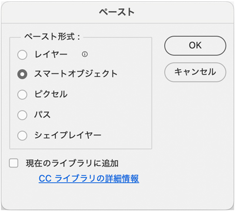
スマートオブジェクトにドロップシャドウを追加
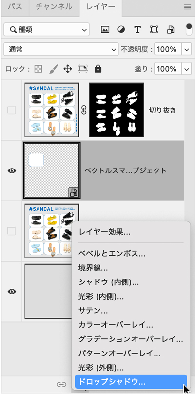
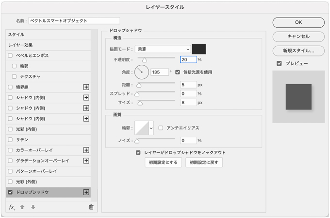
元画像のように複製して並べる
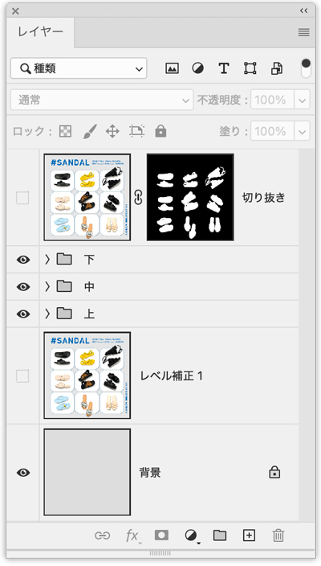
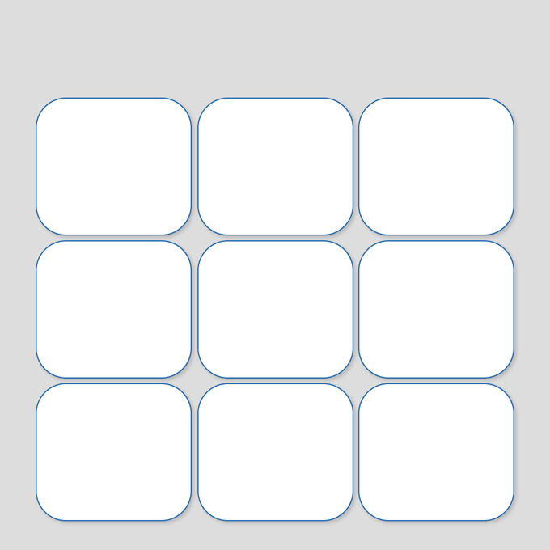
切り抜きレイヤーを表示
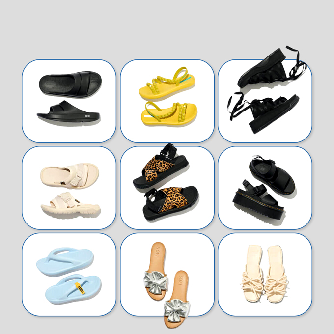
文字を入力
- 見本に近い書体「Tilden Sans Bold」（Adobe Fonts）
- 書体ががある場合は、そのまま入力
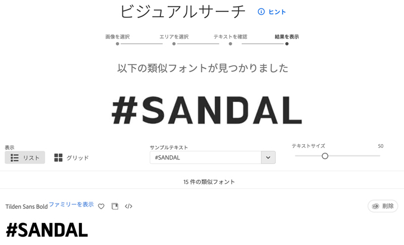
- ロゴ「#SANDAL」は、Illustratorでトレース
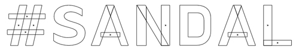
完成
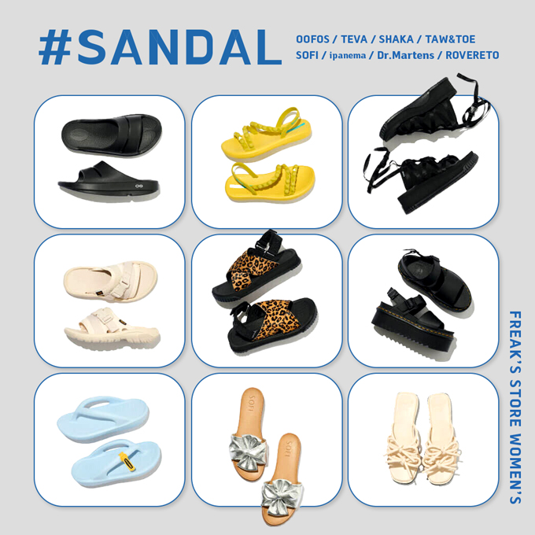